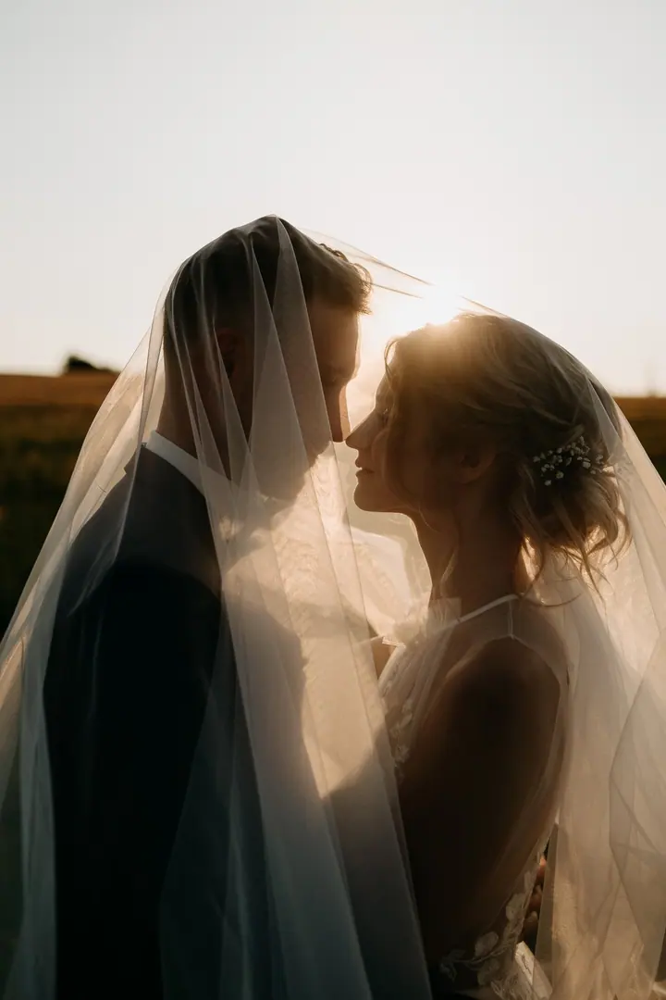
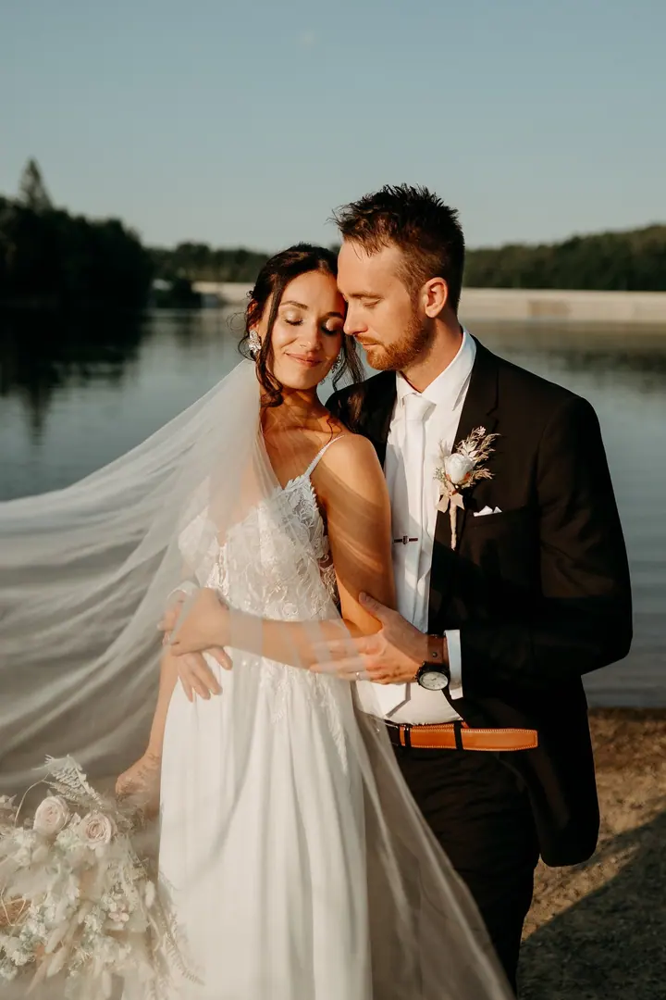
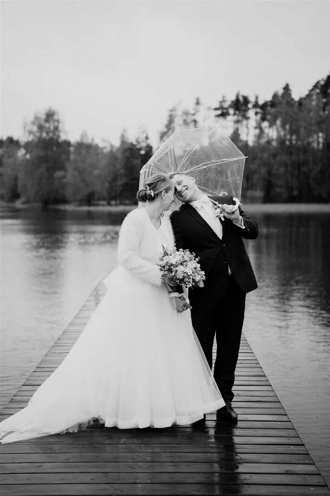

Svatební focení
Váš den tiše dokumentuji tak, jak si běží, bez strojenosti a podle vás. Ráda vám pomůžu doladit plány a cenovou nabídku vám pošlu na míru.

Jmenuji se Eva Havlová a jsem svatební fotografka z Vysočiny, dobrodruh a taky trochu snílek. Váš den tiše dokumentuji tak, jak si běží, protože nemám ráda strojenost. O…
Rezervovat termínNejkrásnější zážitky jsou pro mě ty, o které se můžu s někým podělit, a proto jsem si focení zamilovala. Věřím na lásku a žiju s úsměvem. Fotím srdcem a nejdůležitější je pro mě příběh, který fotka vypráví. Svatby nejsou jen moje práce, ale taky láska, která s sebou nese zodpovědnost, vděčnost i nadšení.


Doma mi říkají Evíku. Často se směju, ráda naslouchám a jsem hodně emotivní. Pořád se toulám po lesích a loukách. Největší zážitky jsem si dovezla z Norska, kde jsem měsíc chodila po horách ve dne v noci. Nejraději cestuji autem a nalehko, spím pod širákem a na kopec se snažím vyšlápnout se západem slunce.
Působím na Vysočině, ale na svatbu za vámi ráda přijedu kamkoli. Za sezónu najezdím pár tisícovek kilometrů, po cestě si v autě zpívám a s nadšením objevuji svatební místa po celé zemi. Těším se, až se o vás dozvím víc.
Co fotím
Váš den tiše dokumentuji tak, jak si běží, bez strojenosti a podle vás. Ráda vám pomůžu doladit plány a cenovou nabídku vám pošlu na míru.
Venkovní focení s dětmi malými i velkými a newborn focení u vás doma nebo v porodnici. Hodina focení a 30 až 40 upravených fotografií za 4 800 Kč.
Láska, žádost o ruku nebo očekávání miminka. 20 až 30 kompletně upravených fotografií za 4 200 Kč.
Rodinné oslavy narozenin, křtiny a rozlučky se svobodou. Fotím od dvou hodin, dostanete 80 a více upravených fotografií, cena od 5 000 Kč.
Postup
Povězte mi o svých plánech, o tom, jací jste a jakou veselku jste si vysnili. Odpovím vám co nejdříve to půjde.
Každá svatba je jedinečná, proto vám pošlu kompletní nabídku na míru a zodpovím jakýkoli dotaz.
Ráda vám pomůžu doladit průběh dne, budu s vámi sdílet svatební zkušenosti a poradím, kdykoli bude potřeba.
Tiše dokumentuji váš den tak, jak si běží, a raduji se s vámi. Ke konci dne si najdeme chvilku na focení novomanželů v měkkém světle.
Otázky
Ceník svatebního focení je na vyžádání. Napište mi pár řádků o vaší svatbě a já vám pošlu kompletní cenovou nabídku.
Ano. Působím na Vysočině, ale na svatbu za vámi ráda přijedu kamkoli po celé zemi.
Nemám ráda strojenost. Den tiše dokumentuji tak, jak si běží, a hledám opravdové emoce. Hodně párů mi pak řekne, že o mně skoro nevěděli.
Ano. Rodinné focení stojí 4 800 Kč za hodinu a 30 až 40 upravených fotek, párové focení 4 200 Kč za 20 až 30 fotek. Fotky dostanete v online soukromé galerii.